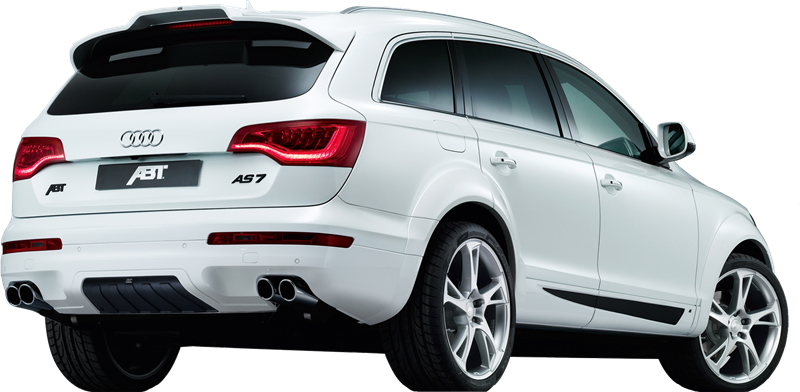

- 
-

-

-

Ferrari 458 Italia Sucesor Ferrari 488 GTB Tipo Automóvil superdeportivo Carrocerías Berlinetta dos puertas Configuración Motor central trasero longitudinal, tracción trasera
Leer másFerrari 458 Italia Sucesor Ferrari 488 GTB Tipo Automóvil superdeportivo Carrocerías Berlinetta dos puertas Configuración Motor central trasero longitudinal, tracción trasera
Leer más